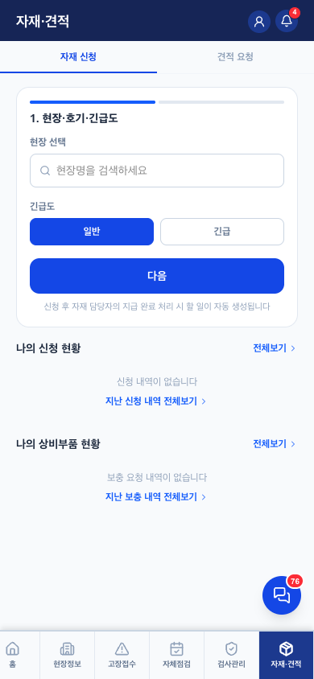
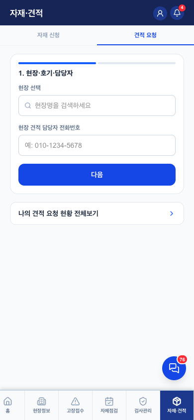

자재·견적 v0.1
1. 이 화면의 정체 — 돈 흐름의 입구
- 부품이 필요한 두 갈래: 자재 신청(우리 재고에서 지급) / 견적 요청(고객에게 견적서 보내 승인받는 유상 공사)
- 이후 체인: 자재담당관리자 지급 완료 → 할일 자동 생성(교체 작업) → 작업 후 비용청구 → 30일 초과 미청구는 관리자 대시보드에 경고. 할일·청구와 한 줄기의 데이터 흐름 — 이 체인이 이 서비스의 "서류 없는 회사" 실체
- 상비부품(기사 차량 재고) 보충 요청도 이 탭 — 지급 완료 시 수령 확인 알림
2. 하위 2탭


| 탭 | 역할·핵심 규칙 |
|---|---|
| 자재 신청 | 스텝폼: 현장·호기·긴급도(일반/긴급) → 부품 → 제출. "지급 완료 처리 시 할 일 자동 생성" 안내가 폼에 명시. 아래에 나의 신청 현황·상비부품 현황 |
| 견적 요청 | 스텝폼: 현장·호기·견적 담당자 전화번호 → 내용. 관리자가 견적서 작성 → 고객 메일 발송(콘솔 QuoteSendModal) |
취소는 나의 현황에서 — 취소 시 관리자에게 알림(자재/견적 취소 알림 2종). 지급 전에만 가능.
3. 필요 요소 (동작 전제)
supply_requests·quote_requests— 신청·상태. v2 FK 병행- 자재담당관리자(admin_tier=material) — 지급 처리 주체. 콘솔 아닌 모바일 관리자 모드 사용
- 견적 이메일: 네이버 SMTP (구일 계정 — 화이트라벨 분리 대상)
4. QA 체크포인트 — 2026-08-04 검증 (QA-RULES 7장)
- ✅ 지급완료 → 할일 자동 생성, "할일"과 "자재지급" 알림 중복 방지
- ✅ 신청→승인→지급→수령확인 각 단계 알림 (자재신청 들어옴·지급완료 등)
- ✅ 취소 시 관리자 알림 (지급 전만 취소 가능)
6. 화이트라벨 — 구일전용 → 타사 일반화
| # | 지금 | 어떻게 |
|---|---|---|
| 1 | 견적서 발송 메일 = 구일 네이버 SMTP (서버 환경변수) | 테넌트별: 회사 메일 계정 등록(온보딩) or 중앙 발송 서비스(Resend 급). MULTITENANT-PLAN 5-3에서 견적(고객 발송)만 회사별로 가는 방향 |
| 2 | 견적서 양식의 회사 정보(상호·연락처 등) | tenants.*에서 — 사업자등록증 수집(온보딩 1장)이 이 용도 |
| 3 | 부품 목록(lib/constants) — 구일 취급 부품 기준 | 테넌트별 부품 사전으로 (기본 목록 제공 + 회사가 추가) |
변경 이력
| 버전 | 날짜 | 변경 |
|---|---|---|
| v0.1 | 2026-08-04 | 최초 작성 — 돈 흐름 체인(신청→지급→할일→청구) 명시, QA-RULES 7장 반영, 부품 사전 테넌트화 포함 |